Остров Кенгуру - одно из самых красивых мест в мире.
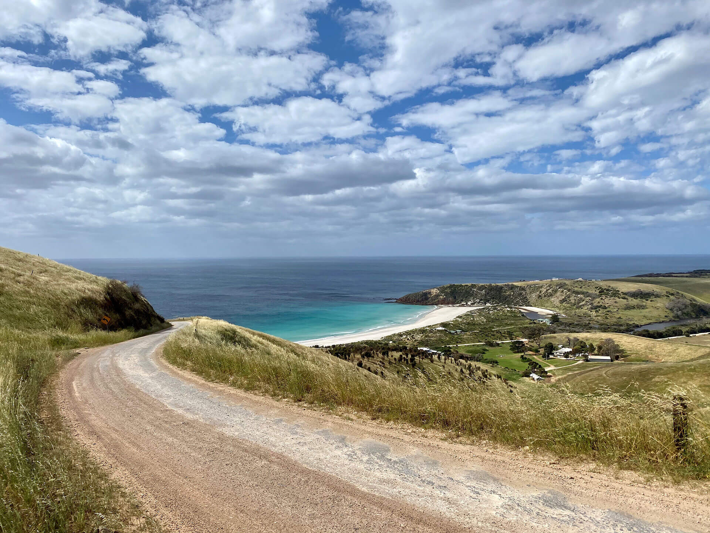
Представьте себе остров с 509 км береговой линией и 155 км от восточного до западного побережья.
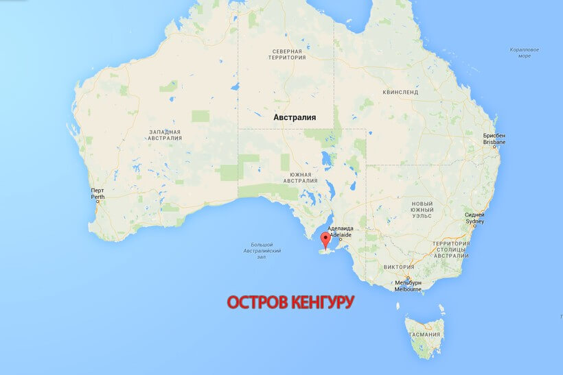
На его территории простирается огромный по площади парк, населённый редкими видами древних животных и реликтовых растений.
На острове несколько тысячелетий назад обитали аборигены, после чего они покинули эти края, и всё это время земли оставались полностью изолированными от окружающего мира, давая местным животным возможность жить в полном спокойствии и безопасности. И лишь в 1802 году на остров Кенгуру ступил европеец Флиндерс, который и подарил этим землям такое название.
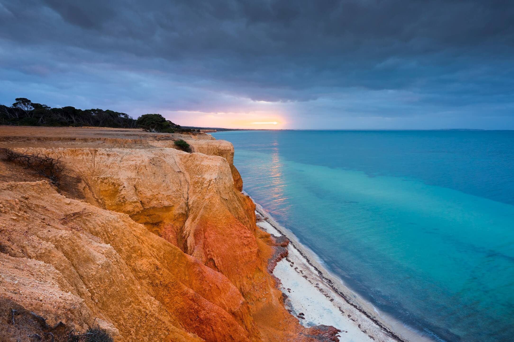
Если подняться более чем на 500 ступенек на вершину Проспект-Хилл, того самого холма, на который в 1802 году поднялся Мэтью Флиндерс, Вы будете вознаграждены потрясающими видами на залив Пеннингтон, лагуну Пеликан и через Мустон до Американ-Ривер.
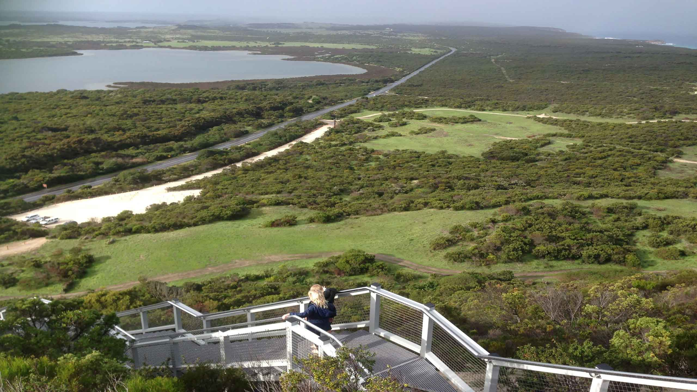
На острове увидеть представителей семейства кенгуровых можно не только на территории национальных парков и заповедных зон, но и вблизи дорог.
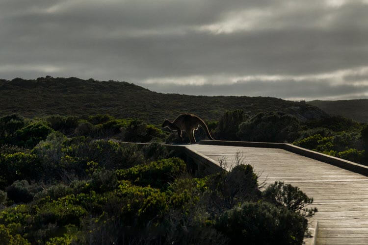
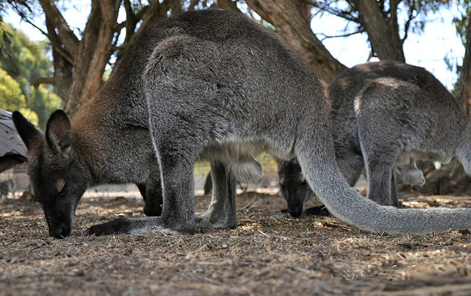
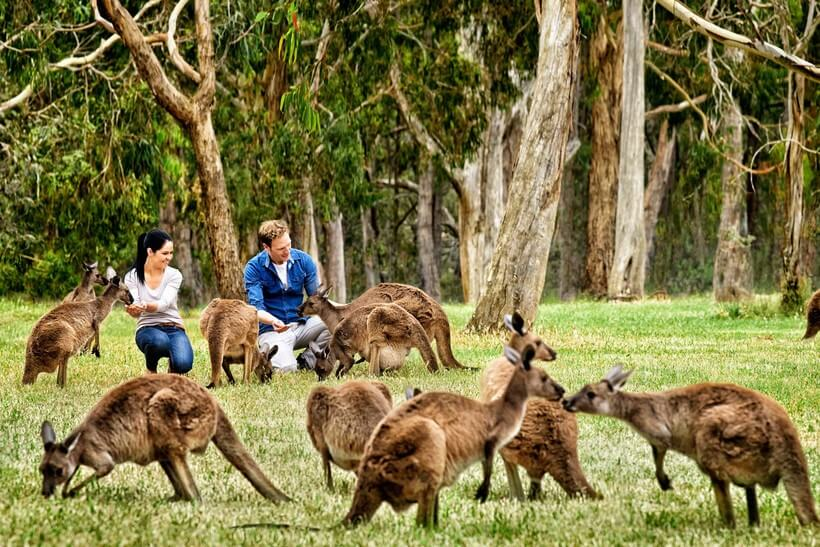
Еще одной известной изюминкой на острове Кенгуру является Seal Bay Conservation Park – парк-заповедник, где обитает одна из крупных по величине в Австралии колония морских львов.
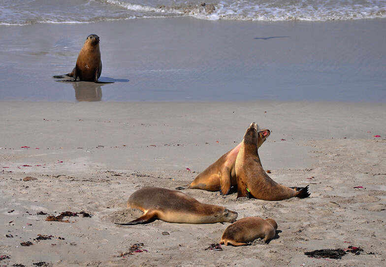
По пешеходной дорожке над пляжем, где отдыхают львы, может гулять любой желающий, а вот спускаться на пляж можно только с гидом.
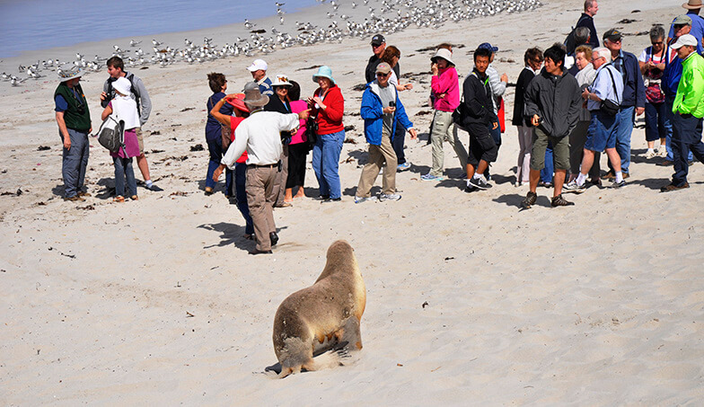
Остров Кенгуру, как и большая часть Австралии, летом регулярно подвергается воздействию лесных пожаров. Хотя большинство лесных пожаров гораздо более локализованы, летом 2019-20 гг. Произошел беспрецедентный лесной пожар, который серьезно повлиял на остров Кенгуру, а также на другие части Австралии.
Пожары начались на северном побережье острова 20 декабря 2019 года из-за ударов молнии и к 30 декабря были относительно контролируемы, горели внутри огражденных линий. Ночью 30 декабря на остров обрушилось еще больше молний, на этот раз в пределах заповедной зоны Ущелье Касоарс, к северу от национального парка Флиндерс-Чейз. По мере ухудшения условий персонал службы экстренной помощи тесно сотрудничал с населением в западной части острова, и ко 2 января 2020 года началась эвакуация.
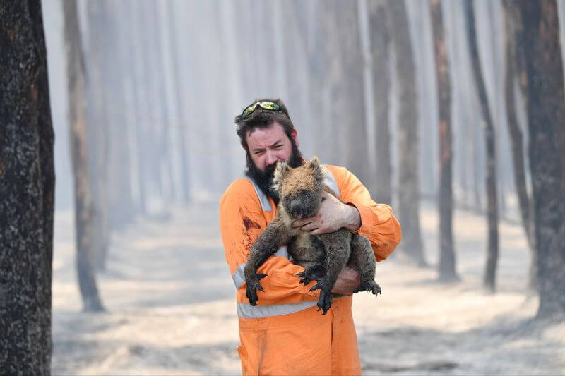
3 января 2020 года западная оконечность острова, где находится национальный парк Флиндерс-Чейз и прилегающая к нему зона защиты дикой природы Равин-де-Казоарс, были сожжены вместе с заповедником Келли-Хилл. Пожары продолжали гореть по всему острову в течение нескольких недель, двое погибших, многие предприятия, дома и фермы были потеряны, бесчисленное количество домашнего скота, а также драгоценная среда обитания и дикие животные погибли.
Были задействованы многие сотни наземных и воздушных пожарных при поддержке многих других агентств, частного сектора и местного населения, чтобы взять под контроль пожары. 21 января пожар был объявлен локальным, а 6 февраля - безопасным. Из 440 500 га острова около 211 000 га пострадало от этого пожара.
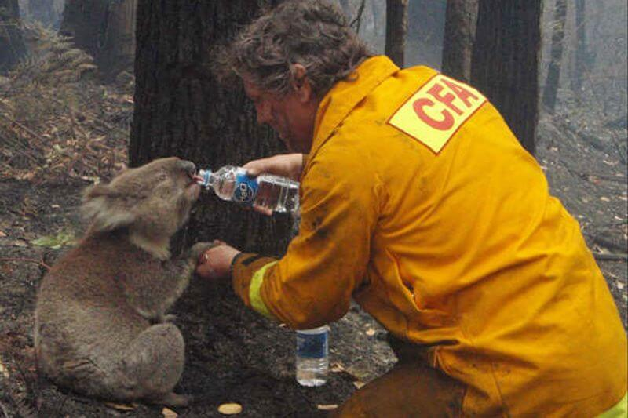
Лесные пожары на острове Кенгуру летом 2019-2020 гг. были самыми крупными на острове и сожгли больше растительности, чем любой пожар ранее бывший на острове
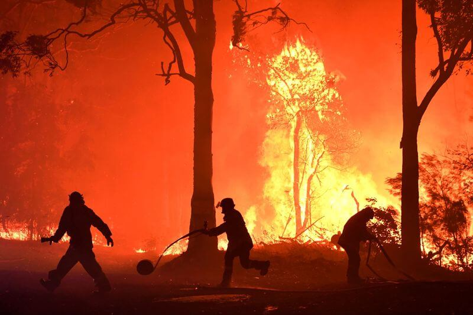
ВВЕРХ